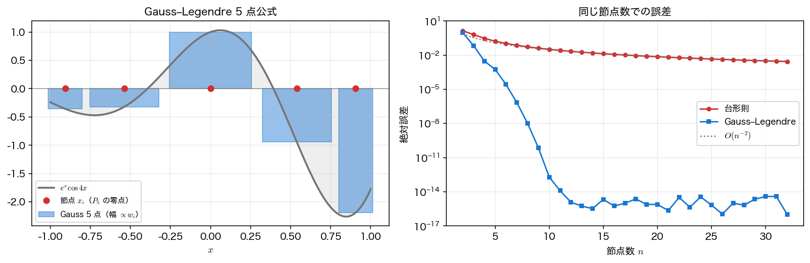
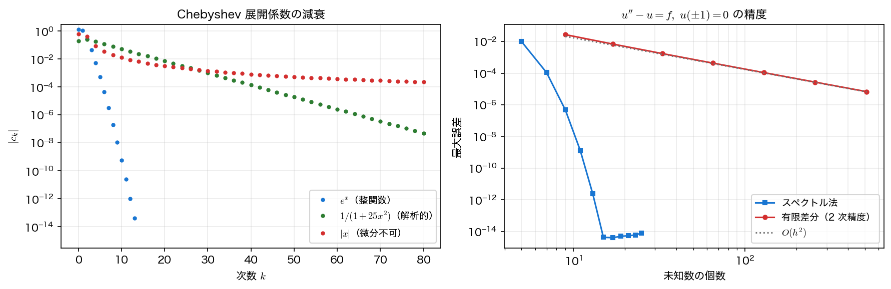

Gauss 求積とスペクトル法
前ページでは直交多項式を「関数を展開する道具」として使った。ここでは、それが定める 標本点 に注目する。数値積分には \(P_n\) の零点（Gauss 点）を、微分と微分方程式には \(T_N\) の極値点（Chebyshev–Gauss–Lobatto 点）を選ぶ。標本点をこう取り替えるだけで、数値積分は同じ点数で桁違いに正確になり、微分方程式の解法は誤差が指数的に減る スペクトル法 になる。展開係数の減衰の速さが、そのまま計算精度に化けるのがこの章の主題である。
Gauss–Legendre 求積
\(\int_{-1}^{1}f(x)\,dx\) を、節点 \(x_i\) と重み \(w_i\) による和
で近似する。台形則や Simpson 則では節点をあらかじめ等間隔に固定し、重みだけを選んでいた。しかし節点も自由に選べるとすれば、決められる量は \(2n\) 個（\(x_i\) が \(n\) 個、\(w_i\) が \(n\) 個）ある。\(2n\) 個の条件を課せるのだから、原理的には \(2n-1\) 次までの多項式を厳密に積分できるはずである。それを実現するのが Gauss–Legendre 求積 で、答えは驚くほど簡潔である。
Gauss–Legendre 求積
節点 \(x_i\) を \(P_n\) の \(n\) 個の零点 に、重みを
に取ると、\(2n-1\) 次以下のすべての多項式に対して上の近似は 厳密 になる。\(5\) 点でも \(9\) 次多項式が誤差なしで積分できる。
\(5\) 点公式で確かめる。節点が本当に \(P_5\) の零点であること、重みの和が区間の長さ \(2\) になること、そして \(9\) 次まで厳密で \(10\) 次で誤差が出ることを見る。
import numpy as np
import numpy.polynomial.legendre as leg
xq, wq = leg.leggauss(5)
print("節点 x_i:", np.round(xq, 6))
print("重み w_i:", np.round(wq, 6))
print("P5 の零点:", np.round(np.sort(leg.legroots(np.eye(6)[5])), 6))
print(f"重みの和 = {wq.sum():.12f}（区間の長さ 2 に等しい）")
for m in (8, 9, 10):
num = np.sum(wq * xq**m)
exact = 0.0 if m % 2 else 2/(m + 1)
print(f"∫x^{m:2d}dx: 数値={num:.12f} 厳密={exact:.12f}"
f" 誤差={abs(num-exact):.2e}")
節点 x_i: [-0.90618 -0.538469 0. 0.538469 0.90618 ]
重み w_i: [0.236927 0.478629 0.568889 0.478629 0.236927]
P5 の零点: [-0.90618 -0.538469 -0. 0.538469 0.90618 ]
重みの和 = 2.000000000000（区間の長さ 2 に等しい）
∫x^ 8dx: 数値=0.222222222222 厳密=0.222222222222 誤差=1.67e-16
∫x^ 9dx: 数値=0.000000000000 厳密=0.000000000000 誤差=0.00e+00
∫x^10dx: 数値=0.178886369363 厳密=0.181818181818 誤差=2.93e-03
節点は \(P_5\) の零点と完全に一致し、\(8\) 次・\(9\) 次は機械精度で厳密、\(10\) 次（\(=2n\) 次）で初めて \(2.9\times10^{-3}\) の誤差が出る。理論の \(2n-1=9\) という境目がそのまま数値に現れている。
多項式でない関数ではどうか。\(g(x)=e^x\cos 4x\)（原始関数が \(e^x(\cos 4x+4\sin 4x)/17\) なので厳密値が書ける）を、同じ節点数 の台形則と比べる。
def g(x):
return np.exp(x) * np.cos(4*x)
exact = (np.exp(1)*(np.cos(4) + 4*np.sin(4))
- np.exp(-1)*(np.cos(4) - 4*np.sin(4))) / 17
print(f"厳密値 = {exact:.12f}")
for n in (4, 8, 16, 32):
xg, wg = leg.leggauss(n)
xt = np.linspace(-1, 1, n)
print(f"n={n:2d}: Gauss 誤差={abs(np.sum(wg*g(xg)) - exact):.3e} "
f"台形則 誤差={abs(np.trapz(g(xt), xt) - exact):.3e}")
厳密値 = -0.639928454472
n= 4: Gauss 誤差=3.034e-03 台形則 誤差=2.987e-01
n= 8: Gauss 誤差=9.906e-09 台形則 誤差=5.354e-02
n=16: Gauss 誤差=5.551e-16 台形則 誤差=1.159e-02
n=32: Gauss 誤差=0.000e+00 台形則 誤差=2.709e-03
台形則は \(n\) を \(4\) 倍しても誤差が \(1/16\) 程度にしか減らない（\(O(n^{-2})\) の代数収束）。Gauss は \(n=16\) で機械精度に達し、それ以上は改善する余地がない。関数を評価する回数が同じでも、点の置き方だけでこれだけ違う。

区間が \([-1,1]\) でないとき
一般の \([a,b]\) には \(x=\frac{b-a}{2}t+\frac{a+b}{2}\) と変数変換すればよく、積分は \(\frac{b-a}{2}\sum_i w_i f(x(t_i))\) になる。無限区間や特異性のある被積分関数には、重みを合わせた Laguerre 型・Chebyshev 型の Gauss 公式がある。scipy.integrate.quad が内部で使っているのも、この系統の適応型 Gauss 公式（Gauss–Kronrod）である。
Chebyshev 微分行列
積分の次は微分である。節点上の値 \(u_j=u(x_j)\) から導関数の値 \(u'(x_j)\) を求めたい。有限差分は近傍の \(2\sim3\) 点しか使わないが、ここでは 全節点を通る補間多項式を微分する。節点を Chebyshev–Gauss–Lobatto 点 \(x_j=\cos(\pi j/N)\) に取れば、この操作は行列の掛け算
で書ける。\(D\) が Chebyshev 微分行列 で、成分は明示的に与えられる（\(c_0=c_N=2\)、その他 \(c_j=1\)）。
対角成分を「行和が \(0\) になるように」定めているのがポイントで、定数関数の微分がきっちり \(0\) になる。\(2\) 階微分は \(D^2\) でよい。
def cheb_diff(N):
"""Chebyshev-Gauss-Lobatto 点 x_j=cos(pi j/N) 上の微分行列 D と節点 x。"""
x = np.cos(np.pi * np.arange(N + 1) / N)
c = np.ones(N + 1)
c[0] = c[N] = 2.0
c = c * (-1.0)**np.arange(N + 1)
dX = x[:, None] - x[None, :]
D = np.outer(c, 1/c) / (dX + np.eye(N + 1))
return D - np.diag(D.sum(axis=1)), x
for N in (8, 16, 24):
D, x = cheb_diff(N)
u = np.exp(x) * np.sin(3*x)
du = np.exp(x) * (np.sin(3*x) + 3*np.cos(3*x))
d2u = np.exp(x) * (6*np.cos(3*x) - 8*np.sin(3*x))
print(f"N={N:2d}: u' の誤差={np.abs(D @ u - du).max():.2e} "
f"u'' の誤差={np.abs(D @ D @ u - d2u).max():.2e}")
N= 8: u' の誤差=7.86e-03 u'' の誤差=3.36e-01
N=16: u' の誤差=5.42e-10 u'' の誤差=9.28e-08
N=24: u' の誤差=1.29e-13 u'' の誤差=2.01e-11
\(N\) を \(8\to16\) にしただけで \(1\) 階微分の誤差が \(7\) 桁下がる。\(2\) 次精度の差分なら、点数を倍にしても誤差は \(1/4\)（\(0.6\) 桁）にしかならない。この 指数収束（スペクトル収束） が直交多項式を使う最大の見返りである。
微分行列は密で条件数が悪い
\(D\) は \((N+1)\times(N+1)\) の 密行列 で、差分行列のような疎な帯構造をもたない。しかも \(D^2\) そのものは 特異 である ── 定数と \(x\) が \(D^2\mathbf 1=D^2\mathbf x=\mathbf 0\) という形で核に入るので、通常の意味の条件数は無限大になる。意味があるのは、境界条件を課して内部節点に制限した二階微分行列 \((D^2)_{1:N,1:N}\) のほうで、こちらの条件数が \(O(N^4)\)（実測で \(\approx0.020\,N^4\)、\(N=64\) で \(3.3\times10^5\)）で増える。\(N\) を大きくしすぎると丸め誤差が支配的になるのはこのためである（上の表でも \(N=24\) の \(2\) 階微分は \(1\) 階より \(2\) 桁悪い）。実用上は \(N\lesssim100\) 程度にとどめ、それ以上の解像度が要るときは領域を分割する（スペクトル要素法）。
スペクトル法による境界値問題
微分行列があれば、微分方程式は連立一次方程式になる。境界値問題
を考える。\(f(x)=-(2+4x)e^x\) とすると厳密解は \(u(x)=(1-x^2)e^x\) で、誤差を厳密に測れる。離散化は \(D^2\) を代入するだけで
となる。境界条件は、両端に対応する行を単位行（\(u_0=0\)、\(u_N=0\)）で置き換えて課す。同じ問題を \(2\) 次精度の有限差分でも解き、未知数の個数をそろえて比べる。
def exact_u(x):
return (1 - x**2) * np.exp(x)
def rhs_f(x):
return -(2 + 4*x) * np.exp(x)
for N in (4, 8, 12, 16):
D, x = cheb_diff(N)
A, b = D @ D - np.eye(N + 1), rhs_f(x)
A[0, :], A[0, 0], b[0] = 0, 1, 0 # x=+1 の境界条件 u=0
A[N, :], A[N, N], b[N] = 0, 1, 0 # x=-1 の境界条件 u=0
err = np.abs(np.linalg.solve(A, b) - exact_u(x)).max()
print(f"スペクトル法 N={N:2d}（未知数 {N+1:3d}）: 最大誤差={err:.2e}")
for M in (16, 64, 256):
h, xg = 2/M, np.linspace(-1, 1, M + 1)
A = (np.diag(np.full(M+1, -2/h**2 - 1))
+ np.diag(np.full(M, 1/h**2), 1) + np.diag(np.full(M, 1/h**2), -1))
b = rhs_f(xg)
A[0, :], A[0, 0], b[0] = 0, 1, 0
A[M, :], A[M, M], b[M] = 0, 1, 0
err = np.abs(np.linalg.solve(A, b) - exact_u(xg)).max()
print(f"有限差分 M={M:3d}（未知数 {M+1:3d}）: 最大誤差={err:.2e}")
スペクトル法 N= 4（未知数 5）: 最大誤差=9.90e-03
スペクトル法 N= 8（未知数 9）: 最大誤差=4.78e-07
スペクトル法 N=12（未知数 13）: 最大誤差=2.39e-12
スペクトル法 N=16（未知数 17）: 最大誤差=4.00e-15
有限差分 M= 16（未知数 17）: 最大誤差=6.88e-03
有限差分 M= 64（未知数 65）: 最大誤差=4.32e-04
有限差分 M=256（未知数 257）: 最大誤差=2.70e-05
未知数 \(17\) 個どうしで比べると、スペクトル法は \(4.0\times10^{-15}\)、有限差分は \(6.9\times10^{-3}\) で、\(12\) 桁の差 がある。有限差分は未知数を \(16\) 倍の \(257\) 個にしても \(2.7\times10^{-5}\) までしか届かない（\(M\) を \(4\) 倍すると誤差が \(1/16\)、まさに \(O(h^2)\) である）。同じ精度に達するには天文学的な未知数が必要になる。

スペクトル収束が起きる条件
この劇的な差は 解が滑らかなとき だけの話である。より正確に言えば、幾何級数的な指数収束 \(O(\rho^{-N})\) が出るのは、解が実区間を囲む複素近傍（Bernstein 楕円）まで解析接続できるときである。\(C^\infty\) でも解析的でない解なら、\(N\) のどんな冪よりは速く減る 超代数収束 にはなるが、必ずしも指数収束ではない。左図が示すように、係数の減衰の速さは関数の滑らかさを映しており、\(|x|\) のように微分できない点があると代数的な減衰まで落ちる。衝撃波・接触不連続・折れ曲がった境界のある問題では、スペクトル法の優位は失われ、Gibbs 現象（第2回）まで顔を出す。滑らかな解と単純な形状 ── 乱流の直接数値計算や気象モデルの水平方向 ── がスペクトル法の主戦場である。
まとめ
- Gauss–Legendre 求積 は節点を \(P_n\) の零点に取ることで、\(n\) 点で \(2n-1\) 次までの多項式を厳密に積分する。\(5\) 点公式は \(9\) 次まで機械精度、\(10\) 次で \(2.9\times10^{-3}\) の誤差が出て理論の境目が見えた。
- 多項式でない \(e^x\cos 4x\) でも、同じ節点数で台形則が \(O(n^{-2})\) なのに対し Gauss は \(n=16\) で機械精度に達する。
- Chebyshev 微分行列 \(D\) は補間多項式の微分を行列で表したもので、\(N=24\) で \(1\) 階微分の誤差が \(1.3\times10^{-13}\) になる。密行列であること、そして境界条件を課した二階微分行列の条件数が \(O(N^4)\) で増えること（\(D^2\) 自体は定数と \(x\) を核にもつ特異行列である）は代償になる。
- \(D\) を代入すれば微分方程式は連立一次方程式になる（スペクトル法）。\(u''-u=f\) では未知数 \(17\) 個で誤差 \(4.0\times10^{-15}\)、同じ未知数の \(2\) 次精度差分（\(6.9\times10^{-3}\)）と \(12\) 桁の差がついた。
- ただしこの 指数収束は解が滑らかな場合に限る（幾何級数的な減衰には複素近傍への解析接続が要る）。微分できない点や不連続があれば代数収束に落ちる。
理論を確かめたら 演習問題 に進む。次の第13回からは、関数ではなく データの行列 を直交な方向に分解する ── 特異値分解に話を移す。